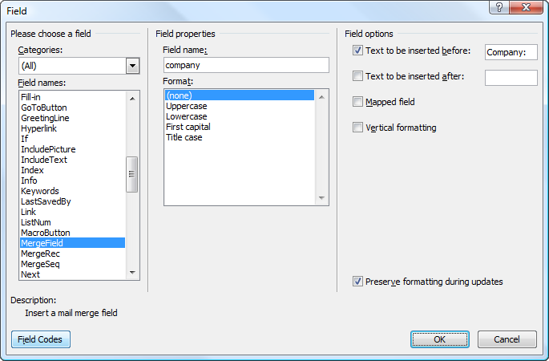
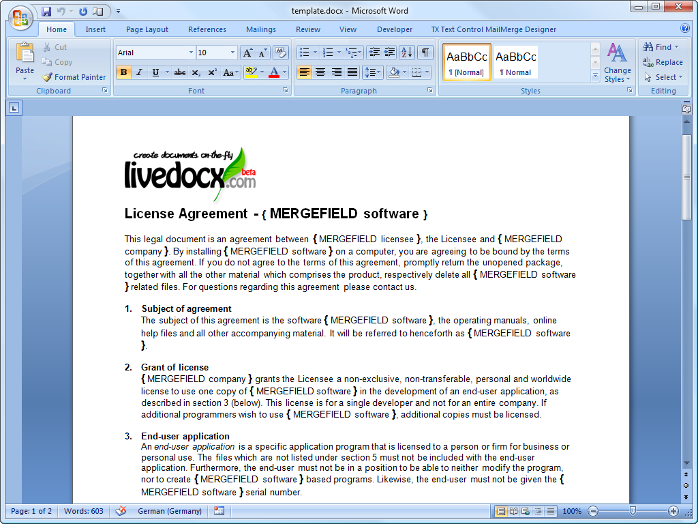
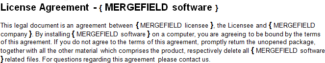
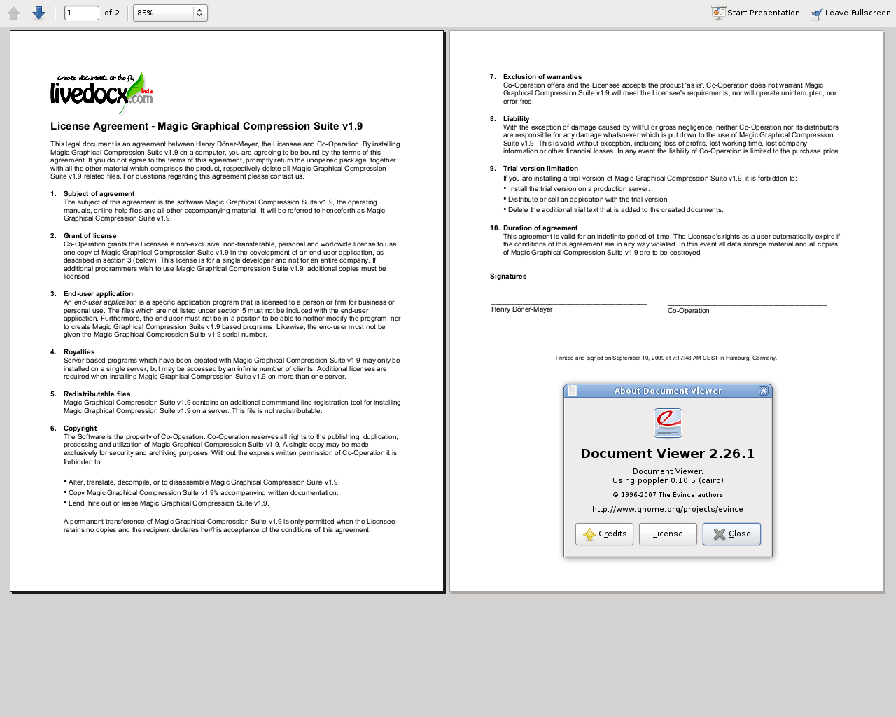
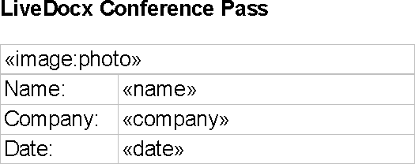
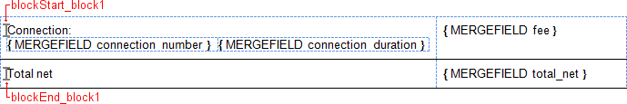
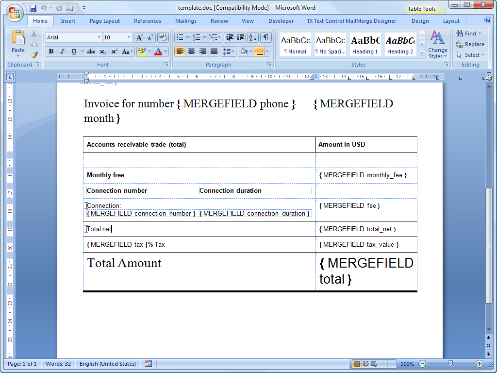
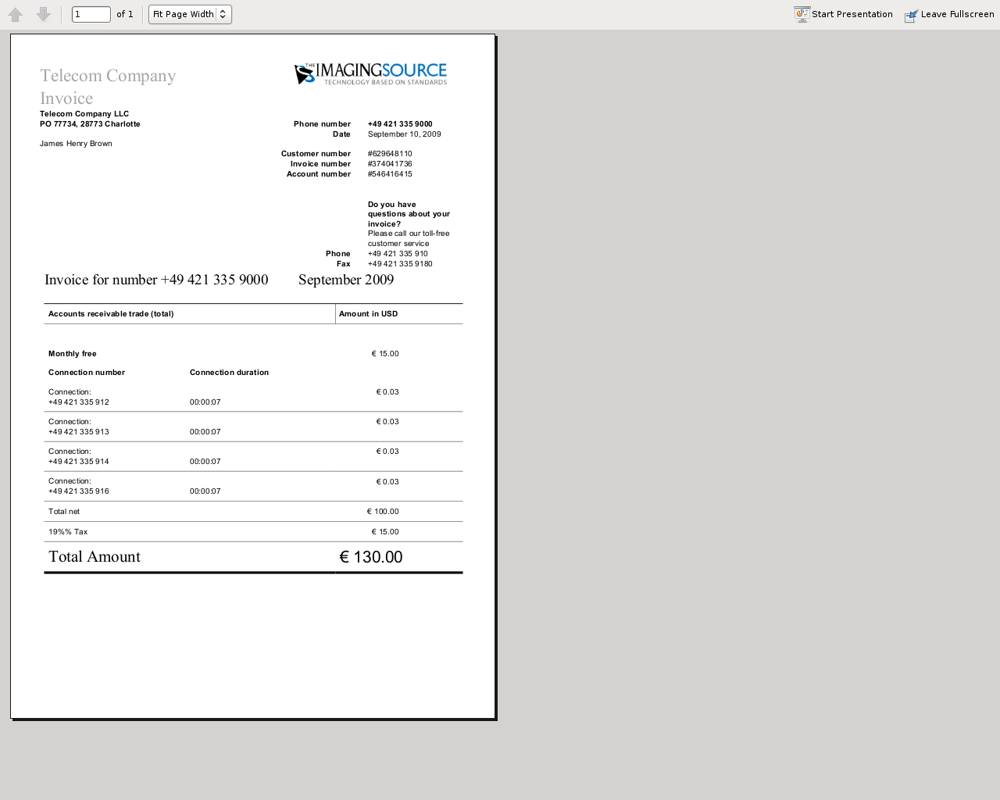
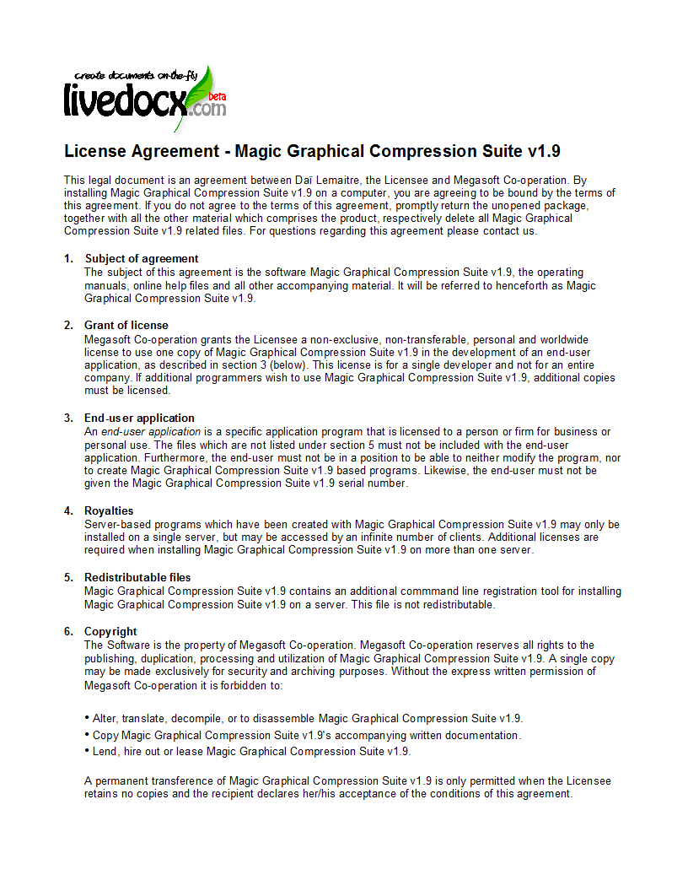
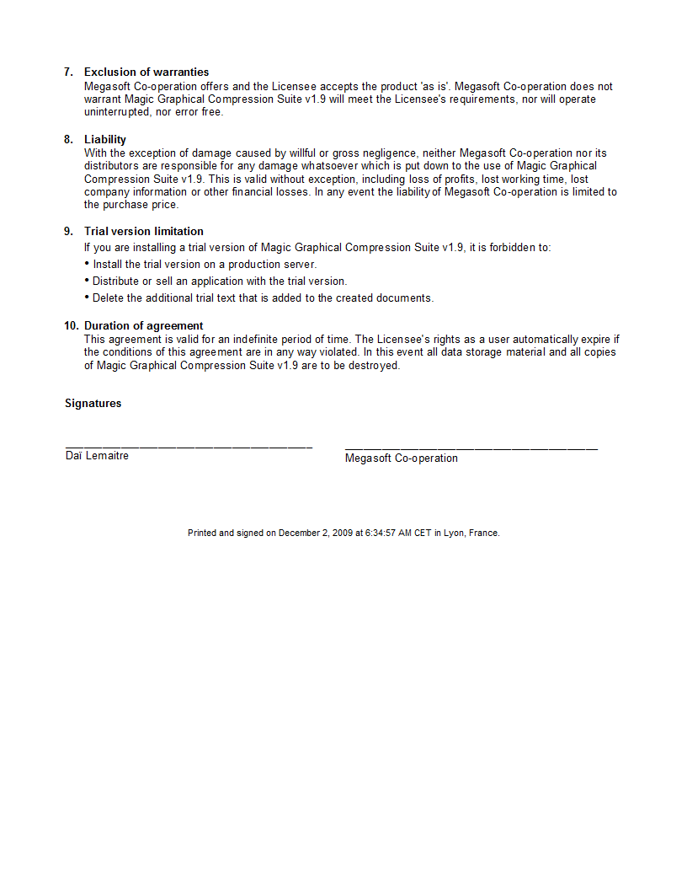

LiveDocx is a SOAP service that allows developers to generate word processing documents by combining structured data from PHP with a template, created in a word processor. The resulting document can be saved as a PDF, DOCX, DOC, HTML or RTF file. LiveDocx implements mail-merge in PHP.
The family of Zend_Service_LiveDocx components provides a clean
and simple interface to the LiveDocx API
and additionally offers functionality to improve network performance.
In addition to this section of the manual, if you are interested in learning more about
Zend_Service_LiveDocx and the backend SOAP
service LiveDocx, please take a look at the following resources:
Shipped demonstration applications. There are a large
number of demonstration applications in the directory
/demos/Zend/Service/LiveDocx of the Zend Framework
distribution file or trunk version, checked out of the standard SVN repository.
These are designed to get you up to speed with
Zend_Service_LiveDocx within a matter of minutes.
Before you can start using LiveDocx, you must first sign up for an account. The account is completely free of charge and you only need to specify a username, password and e-mail address. Your login credentials will be dispatched to the e-mail address you supply, so please type carefully.
LiveDocx differentiates between the following terms: 1) template and 2) document. In order to fully understand the documentation and indeed the actual API, it is important that any programmer deploying LiveDocx understands the difference.
The term template is used to refer to the input file, created in a word processor, containing formatting and text fields. You can download an example template, stored as a DOCX file. The term document is used to refer to the output file that contains the template file, populated with data - i.e. the finished document. You can download an example document, stored as a PDF file.
LiveDocx supports the following file formats:
Templates can be saved in any of the following file formats:
The resulting document can be saved in any of the following file formats:
Images can be merged into templates in any of following file formats:
The resulting document can be exported to any of the following graphical file formats:
Zend_Service_LiveDocx_MailMerge is the mail-merge object in the
Zend_Service_LiveDocx family.
The document generation process can be simplified with the following equation:
Template + Data = Document
Or expressed by the following diagram:
Data is inserted into template to create a document.
A template, created in a word processing application, such as Microsoft Word, is loaded into LiveDocx. Data is then inserted into the template and the resulting document is saved to any supported format.
Start off by launching Microsoft Word and creating a new document. Next, open up the Field dialog box. This looks as follows:

Microsoft Word 2007 Field dialog box.
Using this dialog, you can insert the required merge fields into your document. Below is a screenshot of a license agreement in Microsoft Word 2007. The merge fields are marked as { MERGEFIELD FieldName }:

Template in Microsoft Word 2007.
Now, save the template as template.docx.
In the next step, we are going to populate the merge fields with textual data from PHP.

Cropped template in Microsoft Word 2007.
To populate the merge fields in the above cropped screenshot of the template in Microsoft Word, all we have to code is as follows:
$phpLiveDocx = new Zend_Service_LiveDocx_MailMerge();
$phpLiveDocx->setUsername('myUsername')
->setPassword('myPassword');
$phpLiveDocx->setLocalTemplate('template.docx');
$phpLiveDocx->assign('software', 'Magic Graphical Compression Suite v1.9')
->assign('licensee', 'Henry Döner-Meyer')
->assign('company', 'Co-Operation');
$phpLiveDocx->createDocument();
$document = $phpLiveDocx->retrieveDocument('pdf');
file_put_contents('document.pdf', $document);
The resulting document is written to disk in the file document.pdf. This file can now be post-processed, sent via e-mail or simply displayed, as is illustrated below in Document Viewer 2.26.1 on Ubuntu 9.04:

Resulting document as PDF in Document Viewer 2.26.1.
Using Zend_Service_LiveDocx_MailMerge it is also possible to merge images into
a template. This feature is useful, for example, in the case of a badge application
for a conference. In addition to the name and company name that should appear on
the badge, it is possible to insert a photo of the delegate, using the API.
Even it is sounds a little counter-intuitive, image-merging also work with text fields, as described in the section above. In fact, inserting a text field for an image is identical to inserting a text field for textual information. The only difference is the naming convention of the text field. Whereas, a text field for textual information can have (almost) any identifier, a text field for an image must start with image:. For example, in the case of our badge application, we would have the following 3 fields:

The text field, into which image data will be inserted is called image:photo and can be populated just like any other text field, using the assign method. The text fields name and company are regular text fields for textual information.
Before we insert graphic data, we first have to upload the image to the backend LiveDocx server. This can be achieved using the uploadImage($filename) method.
The following code snippet illustrates the flow:
$phpLiveDocx = new Zend_Service_LiveDocx_MailMerge();
$phpLiveDocx->setUsername('username')
->setPassword('password');
$photoFilename = 'dailemaitre.jpg';
if (!$phpLiveDocx->imageExists($photoFilename)) {
$phpLiveDocx->uploadImage($photoFilename);
}
$phpLiveDocx->setLocalTemplate('template.docx');
$phpLiveDocx->assign('name', 'Daï Lemaitre')
->assign('company', 'Megasoft Co-operation')
->assign('date', Zend_Date::now()->toString(Zend_Date::DATE_LONG))
->assign('image:photo', $photoFilename);
$phpLiveDocx->createDocument();
$document = $phpLiveDocx->retrieveDocument('pdf');
file_put_contents('document.pdf', $document);
$phpLiveDocx->deleteImage($photoFilename);
Note that all images uploaded to your LiveDocx account must have a unique filename. In the case that you only intend to use the image once (such as is probable for our badge application), it makes sense to immediately delete it from the backend, using the deleteImage($filename) method.
Zend_Service_LiveDocx_MailMerge allows designers to insert
any number of text fields into a template. These text fields are populated with data
when createDocument() is called.
In addition to text fields, it is also possible specify regions of a document, which should be repeated.
For example, in a telephone bill it is necessary to print out a list of all connections, including the destination number, duration and cost of each call. This repeating row functionality can be achieved with so called blocks.
Blocks are simply regions of a document, which are repeated
when createDocument() is called. In a block any number of
block fields can be specified.
Blocks consist of two consecutive document targets with a unique name. The following screenshot illustrates these targets and their names in red:

The format of a block is as follows:
blockStart_ + unique name blockEnd_ + unique name
For example:
blockStart_block1 blockEnd_block1
The content of a block is repeated, until all data assigned in the block fields has been injected into the template. The data for block fields is specified in PHP as a multi-assoc array.
The following screenshot of a template in Microsoft Word 2007 shows how block fields are used:

Template, illustrating blocks in Microsoft Word 2007.
The following code populates the above template with data.
$phpLiveDocx = new Zend_Service_LiveDocx_MailMerge();
$phpLiveDocx->setUsername('myUsername')
->setPassword('myPassword');
$phpLiveDocx->setLocalTemplate('template.doc');
$billConnections = array(
array(
'connection_number' => '+49 421 335 912',
'connection_duration' => '00:00:07',
'fee' => '€ 0.03',
),
array(
'connection_number' => '+49 421 335 913',
'connection_duration' => '00:00:07',
'fee' => '€ 0.03',
),
array(
'connection_number' => '+49 421 335 914',
'connection_duration' => '00:00:07',
'fee' => '€ 0.03',
),
array(
'connection_number' => '+49 421 335 916',
'connection_duration' => '00:00:07',
'fee' => '€ 0.03',
),
);
$phpLiveDocx->assign('connection', $billConnections);
// ... assign other data here ...
$phpLiveDocx->createDocument();
$document = $phpLiveDocx->retrieveDocument('pdf');
file_put_contents('document.pdf', $document);
The data, which is specified in the array $billConnections is
repeated in the template in the block connection. The keys of the array
(connection_number, connection_duration and
fee) are the block field names - their data is inserted, one row
per iteration.
The resulting document is written to disk in the file document.pdf. This file can now be post-processed, sent via e-mail or simply displayed, as is illustrated below in Document Viewer 2.26.1 on Ubuntu 9.04:

Resulting document as PDF in Document Viewer 2.26.1.
You can download the DOC template file and the resulting PDF document.
NOTE: blocks may not be nested.
In addition to document file formats,
Zend_Service_LiveDocx_MailMerge also allows documents to be
exported to a number of image file formats (BMP,
GIF, JPG, PNG and
TIFF). Each page of the document is saved to one file.
The following sample illustrates the use of getBitmaps($fromPage,
$toPage, $zoomFactor, $format) and
getAllBitmaps($zoomFactor, $format).
$fromPage is the lower-bound page number of the page range that
should be returned as an image and $toPage the upper-bound page
number. $zoomFactor is the size of the images, as a percent,
relative to the original page size. The range of this parameter is 10 to 400.
$format is the format of the images returned by this method. The
supported formats can be obtained by calling
getImageExportFormats().
$date = new Zend_Date();
$date->setLocale('en_US');
$phpLiveDocx = new Zend_Service_LiveDocx_MailMerge();
$phpLiveDocx->setUsername('myUsername')
->setPassword('myPassword');
$phpLiveDocx->setLocalTemplate('template.docx');
$phpLiveDocx->assign('software', 'Magic Graphical Compression Suite v1.9')
->assign('licensee', 'Daï Lemaitre')
->assign('company', 'Megasoft Co-operation')
->assign('date', $date->get(Zend_Date::DATE_LONG))
->assign('time', $date->get(Zend_Date::TIME_LONG))
->assign('city', 'Lyon')
->assign('country', 'France');
$phpLiveDocx->createDocument();
// Get all bitmaps
// (zoomFactor, format)
$bitmaps = $phpLiveDocx->getAllBitmaps(100, 'png');
// Get just bitmaps in specified range
// (fromPage, toPage, zoomFactor, format)
// $bitmaps = $phpLiveDocx->getBitmaps(2, 2, 100, 'png');
foreach ($bitmaps as $pageNumber => $bitmapData) {
$filename = sprintf('documentPage%d.png', $pageNumber);
file_put_contents($filename, $bitmapData);
}
This produces two files (documentPage1.png and
documentPage2.png) and writes them to disk in the same
directory as the executable PHP file.

documentPage1.png.

documentPage2.png.
Templates can be stored locally, on the client machine, or remotely, on the server. There are advantages and disadvantages to each approach.
In the case that a template is stored locally, it must be transfered from the client to the server on every request. If the content of the template rarely changes, this approach is inefficient. Similarly, if the template is several megabytes in size, it may take considerable time to transfer it to the server. Local template are useful in situations in which the content of the template is constantly changing.
The following code illustrates how to use a local template.
$phpLiveDocx = new Zend_Service_LiveDocx_MailMerge();
$phpLiveDocx->setUsername('myUsername')
->setPassword('myPassword');
$phpLiveDocx->setLocalTemplate('./template.docx');
// assign data and create document
In the case that a template is stored remotely, it is uploaded once to the server and then simply referenced on all subsequent requests. Obviously, this is much quicker than using a local template, as the template does not have to be transfered on every request. For speed critical applications, it is recommended to use the remote template method.
The following code illustrates how to upload a template to the server:
$phpLiveDocx = new Zend_Service_LiveDocx_MailMerge();
$phpLiveDocx->setUsername('myUsername')
->setPassword('myPassword');
$phpLiveDocx->uploadTemplate('template.docx');
The following code illustrates how to reference the remotely stored template on all subsequent requests:
$phpLiveDocx = new Zend_Service_LiveDocx_MailMerge();
$phpLiveDocx->setUsername('myUsername')
->setPassword('myPassword');
$phpLiveDocx->setRemoteTemplate('template.docx');
// assign data and create document
Zend_Service_LiveDocx_MailMerge provides a number of methods
to get information on field names, available fonts and supported formats.
Example 64.102. Get Array of Field Names in Template
The following code returns and displays an array of all field names in the specified template. This functionality is useful, in the case that you create an application, in which an end-user can update a template.
$phpLiveDocx = new Zend_Service_LiveDocx_MailMerge();
$phpLiveDocx->setUsername('myUsername')
->setPassword('myPassword');
$templateName = 'template-1-text-field.docx';
$phpLiveDocx->setLocalTemplate($templateName);
$fieldNames = $phpLiveDocx->getFieldNames();
foreach ($fieldNames as $fieldName) {
printf('- %s%s', $fieldName, PHP_EOL);
}
Example 64.103. Get Array of Block Field Names in Template
The following code returns and displays an array of all block field names in the specified template. This functionality is useful, in the case that you create an application, in which an end-user can update a template. Before such templates can be populated, it is necessary to find out the names of the contained block fields.
$phpLiveDocx = new Zend_Service_LiveDocx_MailMerge();
$phpLiveDocx->setUsername('myUsername')
->setPassword('myPassword');
$templateName = 'template-block-fields.doc';
$phpLiveDocx->setLocalTemplate($templateName);
$blockNames = $phpLiveDocx->getBlockNames();
foreach ($blockNames as $blockName) {
$blockFieldNames = $phpLiveDocx->getBlockFieldNames($blockName);
foreach ($blockFieldNames as $blockFieldName) {
printf('- %s::%s%s', $blockName, $blockFieldName, PHP_EOL);
}
}
Example 64.104. Get Array of Fonts Installed on Server
The following code returns and displays an array of all fonts installed on the server. You can use this method to present a list of fonts which may be used in a template. It is important to inform the end-user about the fonts installed on the server, as only these fonts may be used in a template. In the case that a template contains fonts, which are not available on the server, font-substitution will take place. This may lead to undesirable results.
$phpLiveDocx = new Zend_Service_LiveDocx_MailMerge();
$phpLiveDocx->setUsername('myUsername')
->setPassword('myPassword');
Zend_Debug::dump($phpLiveDocx->getFontNames());
NOTE: As the return value of this method changes very
infrequently, it is highly recommended to use a cache, such as
Zend_Cache - this will considerably speed up your
application.
Example 64.105. Get Array of Supported Template File Formats
The following code returns and displays an array of all supported template file formats. This method is particularly useful in the case that a combo list should be displayed that allows the end-user to select the input format of the documentation generation process.
$phpLiveDocx = new Zend_Service_LiveDocx_MailMerge()
$phpLiveDocx->setUsername('myUsername')
->setPassword('myPassword');
Zend_Debug::dump($phpLiveDocx->getTemplateFormats());
NOTE: As the return value of this method changes very
infrequently, it is highly recommended to use a cache, such as
Zend_Cache - this will considerably speed up your
application.
Example 64.106. Get Array of Supported Document File Formats
The following code returns and displays an array of all supported document file formats. This method is particularly useful in the case that a combo list should be displayed that allows the end-user to select the output format of the documentation generation process.
$phpLiveDocx = new Zend_Service_LiveDocx_MailMerge();
$phpLiveDocx->setUsername('myUsername')
->setPassword('myPassword');
Zend_Debug::dump($phpLiveDocx->getDocumentFormats());
Example 64.107. Get Array of Supported Image Import File Formats
The following code returns and displays an array of all supported imput image file formats.
$phpLiveDocx = new Zend_Service_LiveDocx_MailMerge();
$phpLiveDocx->setUsername('myUsername')
->setPassword('myPassword');
Zend_Debug::dump($phpLiveDocx->getImageImportFormats());
NOTE: As the return value of this method changes very
infrequently, it is highly recommended to use a cache, such as
Zend_Cache - this will considerably speed up your
application.
Example 64.108. Get Array of Supported Image Export File Formats
The following code returns and displays an array of all supported export image file formats. This method is particularly useful in the case that a combo list should be displayed that allows the end-user to select the output format of the documentation generation process.
$phpLiveDocx = new Zend_Service_LiveDocx_MailMerge();
$phpLiveDocx->setUsername('myUsername')
->setPassword('myPassword');
Zend_Debug::dump($phpLiveDocx->getImageExportFormats());
NOTE: As the return value of this method changes very
infrequently, it is highly recommended to use a cache, such as
Zend_Cache - this will considerably speed up your
application.